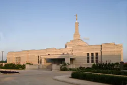
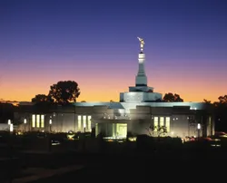
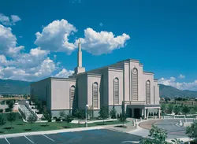
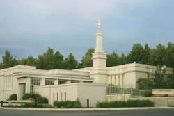

Temple Album
☰
Home
Old
New
Large
Small
Explore Temples
Salt Lake City Temple
Londrina Brazil Temple

Aba Nigeria Temple
Abidjan Ivory Coast Temple
Accra Ghana Temple

Adelaide Australia Temple

Albuquerque New Mexico Temple

Anchorage Alaska Temple
Apia Samoa Temple